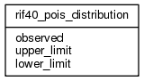

| Table: rif40.rif40_pois_distribution | |||
| Poisson distribution | |||
| Size: medium, Select frequency: medium, Update frequency: medium | |||
| Columns | |||
| Name | Type | Constraints | Description |
| observed | SMALLINT | NOT NULL | Observed |
| upper_limit | float4 (8, 8) | Upper limit | |
| lower_limit | float4 (8, 8) | Lower limit | |
| Primary key | |||
| Name | Columns | Description | |
| rif40_pois_distribution_pk | observed | ||
| Grants | |||
| Role | Actions | ||
| rif40 | select, references, insert, delete, update | ||
| PUBLIC | select, references | ||
